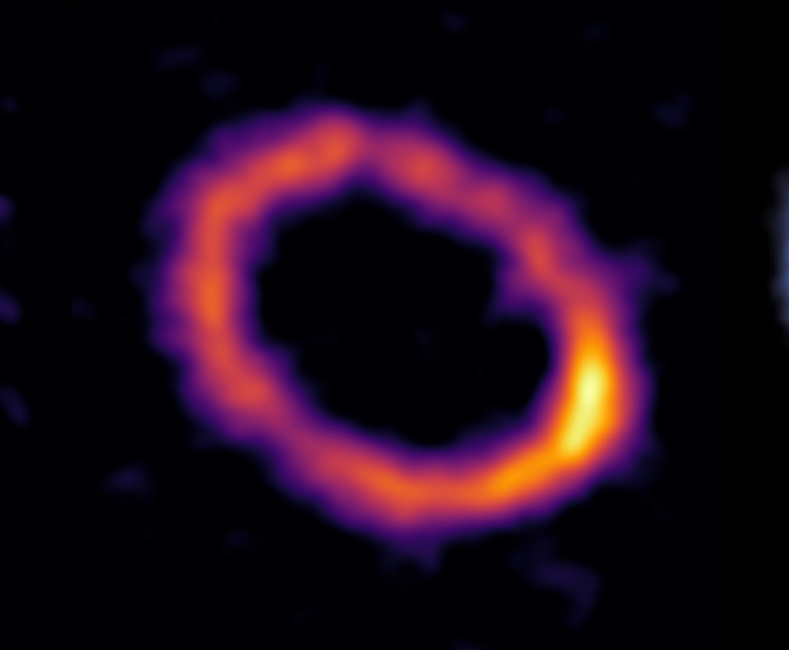

Numerical Simulations
Hydrodynamics of Debris Discs
I model the response of protoplanetary disks and debris discs to dynamical processes such as planet-disc interaction or insabilities. These simulations explore how outbursts modify temperature structures, trigger pressure bumps, and create conditions conducive to rapid planetesimal formation.